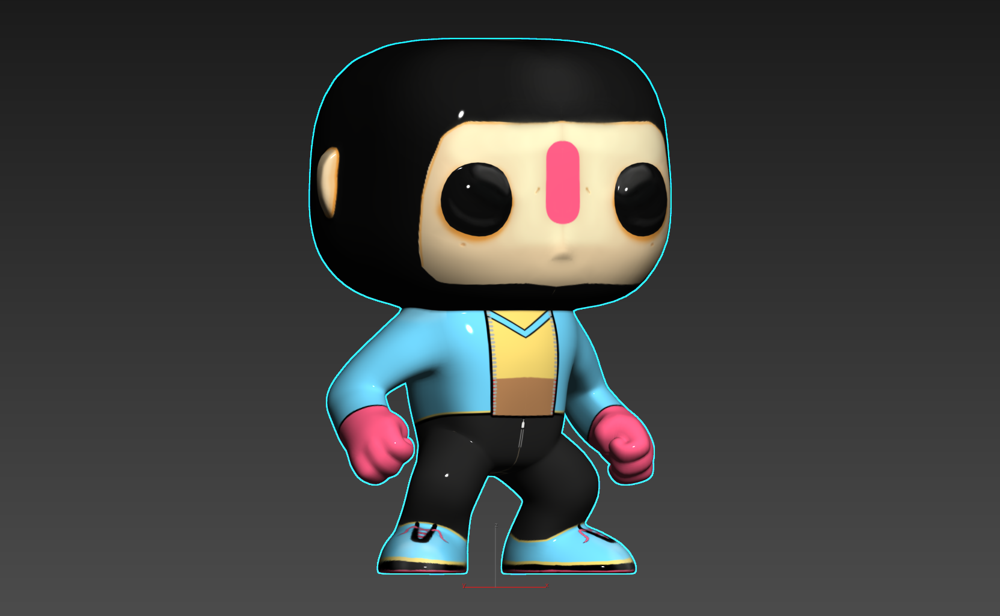
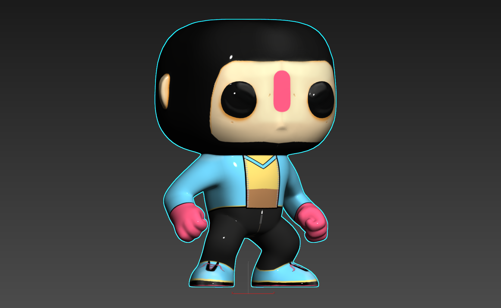

3D Models & Textures
This page showcases a small collection of 3D models and texture work. From stylized creatures to character props, these assets demonstrate my early exploration into modeling, UV unwrapping, and painting surface details to bring objects to life in 3D space.


 
